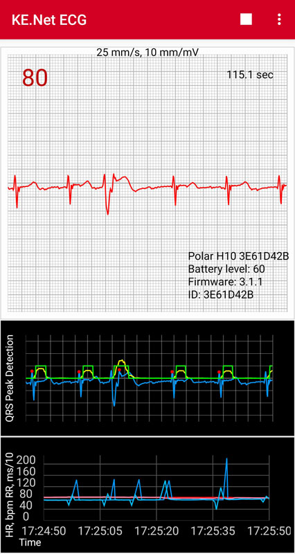

This application displays a real-time ECG from a Polar H10 Heart Sensor. At this time it only works with the H10, and the H10 has to have firmware version 3.0.35 or later installed. It uses the SDK for Polar Sensors (https://github.com/polarofficial/polar-ble-sdk) to access this capability on the H10. You will need to know the device ID, which is printed on top of the sensor. The ECG is plotted on a strip chart. Only the last up to 30 sec. is retained. The data can be exported to a PNG image file of the trace (shows all 30 seconds on graph paper with a header) and also to a CSV file (with all times, not just the last 30 sec). The interface also shows the running heart rate and other information from the device.
As of version 2.0, the application has its own built-in QRS detection algorithm, and there is a plot of the HR and RR values from both the sensor and the internal algorithm. The internal algorithm was developed because in some situations the heart rate the H10 reports is inconsistent with the number of peaks in the ECG. The algorithm is too complicated to describe here but is based on the 1985 paper by Jiapu Pan and Willis J. Tompkins (https://courses.cs.washington.edu/courses/cse474/18wi/labs/l8/QRSdetection.pdf) but with significant modifications. As of version 3.0 it uses a new algorithm somewhat different from Pan-Tompkins.

This is a plot of the HR and RR from both the sensor and the algorithm. The HR is in bpm, and the RR intervals are in units of 0.1 milliseconds (to keep values in the same range as the HR values). The lighter values are the internal calculation. The darker ones are from the sensor. These data are not limited to the last 30 seconds and can be exported to CSV files for use elsewhere. Note that HR is a derived quantity. It is an average of some kind over RR intervals, and is not measured directly. The RR intervals are what is actually measured. It is not public information what algorithms the H10 uses, but the internal algorithm uses 60 / (Running average of last 25 RR intervals in seconds) beats per minute.
There is also optionally a plot of the intermediate steps in the algorithm. This is mostly useful for investigating what the algorithm is doing and not for looking at actual ECG data. This plots shows where it detected a peak and the final results of the digital filtering plus its scoring algorithm. Owing to the properties of digital filters, these later are delayed from the input ECG signal. This plot can be turned off in Settings.
The data are shown on a plot that has markings like a usual ECG plot. There are small and large boxes in the grid. A large box is 0.2 sec (5 per sec) on the horizontal (time) axis and 0.5 mV on the vertical axis. There are 5 small boxes in a large box. For a HR of 60 bpm, you would expect to see one QRS peak every 5 large blocks. For a faster HR, the peaks would be at shorter intervals. A description of how the electrical system in the heart works is beyond the scope of this help page. The essential feature is the distinctive blips in an ECG, which are what is known as the QRS complex. It has to do with the electrical signals that tell the ventricles to contract. R is the peak value in this complex, and the RR intervals are the time between the R peaks.
The terms EKG and ECG are both used for electrocardiograms. They are the same. EKG is German, and probably more common. The usual ECG in a doctor's office is for 10 seconds and has more than one plot, corresponding to the different leads in the usual 12-lead ECG. The H10 only has one lead, the one usually denoted as I and which corresponds to the horizontal axis.
A Bluetooth Low Energy (BLE) sensor, such as the H10, typically delivers a small packet of information once per second (hence low energy). It has one HR and zero or more RR values per packet. There is no timestamp. (The internal algorithm, in contrast, knows the time of each R peak.) Most exercise apps do not show the RR values, whether they receive them or not. The RR intervals are useful in detecting arrythmias. There is also a whole science of Heart Rate Variability (HRV). The small variations in the RR intervals have information that some athletes use to increase their performance. More variation has been shown to be beneficial (where there is no arrhythmia).
The H10 supplies the usual BLE packets with the values just described. In addition, unlike most other monitors, you can get the full ECG trace at 130 Hz intervals. This is less resolution than that for a typical medical ECG, but still very usable. This mechanism is separate from the mechanism by which it supplies the HR/RR values and is proprietary.
KE.Net ECG supports Android 6 and above. Until Android 12, Location permission is required to scan for Bluetooth devices, and if not granted, it will not connect to the device or do anything useful. Starting with Android 12 it requires BLUETOOTH_CONNECT and BLUETOOTH_SCAN permissions and does not require Location. If these two permissions, usually denoted as "Nearby devices", are not granted it will not do anything useful. In general if the permissions are not granted, the app will prompt you to allow them once when it starts, and then will show a notice each time you try to scan for devices. If you have denied these permissions once or set "Don't ask again", depending on the Android version. It will not prompt for permissions when it starts. In that case you can only change the permissions manually by going to Settings | Apps for the app. On some versions of Android, you may be able to tap hold on the desktop icon to easily get to Settings for the app. You can see the permission status in the info menu item. These are combined into Location and Nearby devices when you choose them on the device. That may depend on the device, however.
KE.Net ECG has been made to work with the Android Storage Access Framework in order to comply with Android policies about writing external storage. In order to save exported files, you need to allow KE.Net ECG access to a directory of your choice by selecting it in a system file chooser. You do this with the Set Data Directory menu item. It can be on the external SD card. Starting with Android 11, it cannot be the Downloads directory. Repeating this operation with a different directory will override the previous setting but will not move the files. You can do that manually. The data in this directory will be retained on uninstall (provided it is not in app-specific storage).
KE.Net ECG will continue to run with the device turned off, provided it has a connection. It works in either portrait or landscape mode, and you can change between the two without losing data. Landscape mode may be crowded if the QRS plot is visible, however.
ECG Data
The name is of the form PolarECG-yyyy-MM-dd-HH-mm-ss.csv. The file consists of a header followed by the ECG voltages. There is only one column. The header consists of rows of the form: tag=value for each of these items:
| Tag | Description of the Value |
|---|---|
| application | Name of the application |
| stoptime | Date/Time the recording stopped |
| duration | Duration in seconds |
| nsamples | Number of samples |
| samplingrate | Sampling rate in Hz |
| stopdevicehr | Device HR when recording stopped |
| stopcalculatedhr | Calculated HR when recording stopped |
| devicename | Name of the device |
| deviceid | ID for the device |
| battery | Device battery level |
| firmware | Device firmware |
| note | User supplied note |
The ECG voltages in mV to 3 decimal places follow, one per line.
What is in the header may vary with the KE.Net version. Hopefully whatever is there will be self-explanatory. The characters up to the first = are the tag. Everything that follows on the line is the value. Note that no lines in the header can be parsed as a number. This is a way to distinguish header information from data.
Device HR Data
The name is of the form PolarECG-DeviceHR-yyyy-MM-dd-HH-mm-ss.csv, and the values correspond to the stop time. The delimiter is a comma. The values are a timestamp, the HR value, and a space-separated list of RR values. The RR values are integers in units of 1/1024 sec, which is the raw data from the device.
Calculated HR Data
The name is of the form PolarECG-QRSHR-yyyy-MM-dd-HH-mm-ss.csv, and the values correspond to the stop time. The delimiter is a comma. The values are a timestamp, the HR value, and a space-separated list of RR values. The RR values are integers in units of 1/1024 sec, which is the raw data from the device.
There is an icon on the Toolbar (if there is enough room) that depends on whether it is collecting data or not. When playing, the icon will be a Stop icon, and when stopped it will be a Play icon. It starts in the Playing mode, and will start showing ECG data as soon as it is connected and receiving them. In order to save or export data files, it needs to be stopped first. The Save menu items should not appear when playing. Also panning is not enabled when playing, but is when stopped. Panning is not ever enabled on the HR/RR plot owing to issues with AndroidPlot. When you start playing again, the current data is lost, and it starts over.
Save
This is a menu with sub-menu items related to saving data in several ways. It only appears when recording is stopped. There are four types of data files that can be saved. The menu lists options for saving all these, just the ECG data and plot image, or each item individually.
Save All
You will be prompted for a note to describe the reading. It is not used for the HR and RR values. Saves everything that can be saved. This includes the ECG data CSV file, PNG image, and CSV files for both the sensor and internal algorithm HR and RR values.
Save Data and Plot
You will be prompted for a note to describe the reading. Saves the ECG data and the PNG image.
Save Plot
You will be prompted for a note to describe the reading. Saves only the PNG image.
Save Data
You will be prompted for a note to describe the reading. Saves a CSV file with the ECG data.
Save Device HR Data
Saves a CSV file for the sensor HR and RR values.
Save Calculated HR Data
Saves a CSV file for the internal algorithm HR and RR values.
Set Device ID
Allows you to set the device ID for your H10. You can also do this in Settings, but this is a more complete interface, allowing you to select from values you have most recently used. (That might be useful if you have more than one H10.) The device ID has to be set the first time or the app will not be able to find your device.
Set Data Directory
Brings up a system file chooser to choose the data directory. This is where all your exported data is stored. It can be anywhere the file chooser allows, which should include the SD card. You cannot save data until it is set.
Info
Displays information about the sensor and current status.
Redo Plot Setup
The initial setup determines the basic configuration of the plot and the grid. The plotting setup happens in different threads at different times and some cannot be done until the plot has been drawn at least once. This can cause race conditions. This menu item should not usually be needed, but is provided to correct any problems caused by the steps not being executed in the desired order. This is most likely to occur on an orientation change or when changing the visibility of the QRS plot.
Restart Polar API
This restarts the connection to the Polar SDK implementation. It is essentially the same as restarting the app. It should not usually be necessary, but may be useful if the H10 did not connect for some reason. If for some reason KE.Net ECG is not running properly, detaching the device from the strap and reattaching may be useful. This resets internal things in the device.
The Settings screen allows you to set the device id, the patient name (goes on the PNG image), and whether the QRS plot is visible. The device ID can more easily be set via the Set Device Id menu item.
The plotting uses AndroidPlot (https://github.com/halfhp/androidplot).
The data are obtained using the SDK for Polar Sensors (https://github.com/polarofficial/polar-ble-sdk).